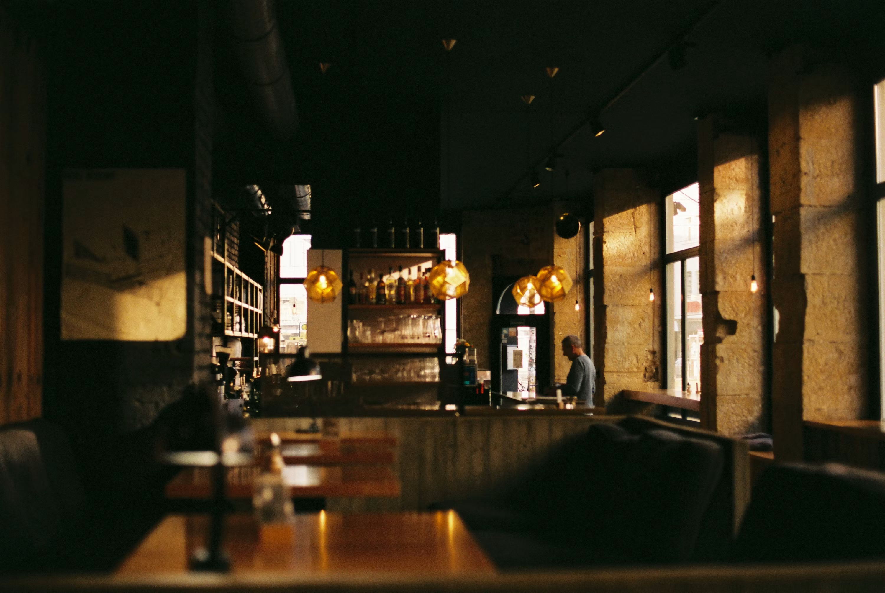
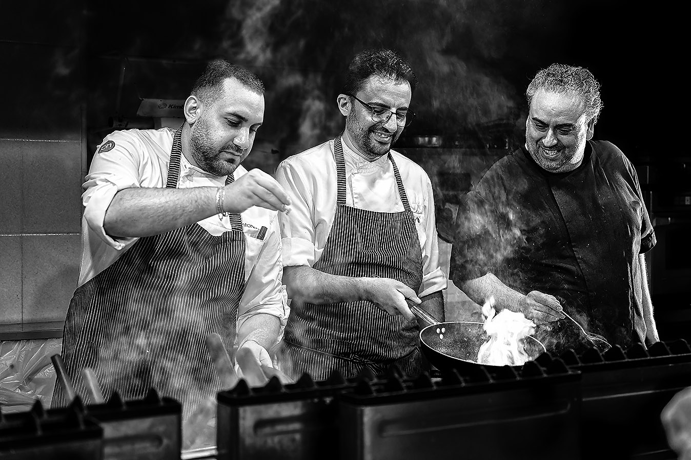

In the spring of 1984, three lifelong friends—Marco Bellini from Emilia-Romagna, Luca Ferraro from Campania, and Sofia Conti from Tuscany—arrived in New York with little more than a shared dream and generations of family recipes tucked into worn notebooks. Having grown up surrounded by bustling kitchens, village markets, and Sunday gatherings where fresh pasta was made by hand, they were determined to recreate those traditions in their new home. After years of working various jobs throughout the city, they pooled their savings to open a small neighborhood restaurant called MammaMia Ristorante, named after the three pairs of hands that kneaded every batch of dough. The tiny storefront quickly became known for its open kitchen, where guests could watch ribbons of tagliatelle, sheets of lasagna, and delicate ravioli being crafted from scratch each morning.

The founders believed that authentic Italian cuisine was not about extravagance but about honoring simple ingredients and time-tested techniques. They spent months building relationships with local farmers, importing specialty cheeses and olive oils from their hometowns, and perfecting recipes that reflected the distinct culinary traditions of their regions. Marco contributed rich northern ragùs and fresh egg pastas, Luca brought the bold flavors of southern Italy, and Sofia introduced rustic Tuscan sauces and handmade specialties. Together, they created a menu that celebrated the diversity of Italian cooking while remaining faithful to its roots. Over the years, MammaMia Ristorante House grew from a modest immigrant dream into a beloved New York institution, earning a reputation for serving pasta that tasted as though it had come directly from an Italian family table.
